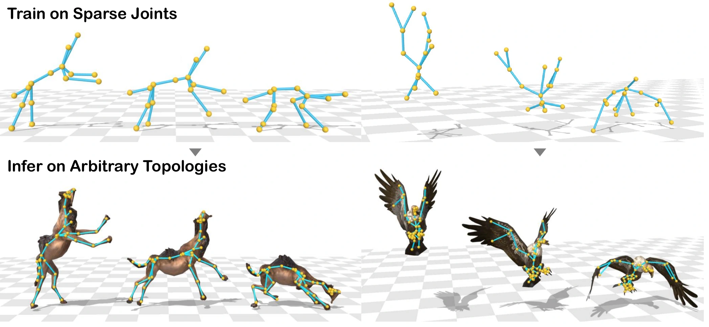
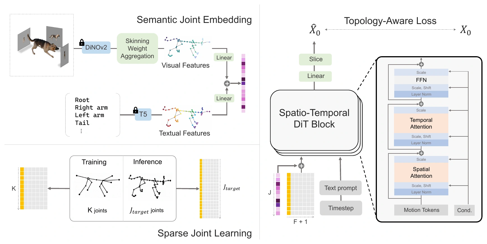
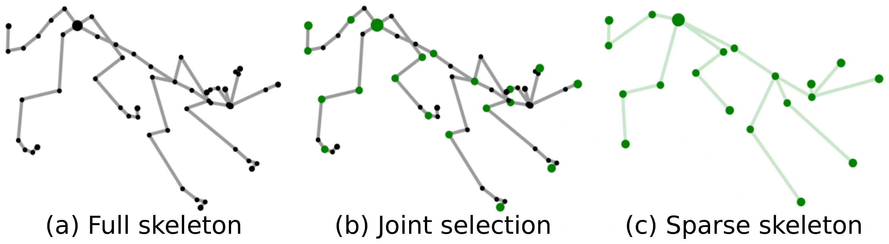

Select representative joints
Farthest point sampling retains a compact subset, starting from the root. Each selected joint reconnects to its nearest retained ancestor.
1 KAIST2 Samsung Electronics
WACV 2027

Topology-agnostic motion generation aims to synthesize motions for diverse characters with arbitrary skeletons. Unlike conventional motion generation, which assumes a fixed skeletal template, this setting must handle diverse joint configurations and inconsistent joint semantics across characters. Existing methods address this challenge through dense full-joint modeling, which incurs substantial computational cost and hinders learning transferable motion patterns across diverse skeletal topologies. We present ETA-Motion, a topology-agnostic motion generation framework based on sparse joint learning. Instead of learning motion from all joints, our method uses a compact subset of joints to reduce redundancy and trains the motion generator on the resulting sparse skeleton. To facilitate correspondence across diverse topologies, we introduce semantic joint embeddings that combine textual and visual cues, together with topology-aware training objectives for preserving skeletal structure. Although ETA-Motion is trained only on sparse skeletal observations, it supports full-skeleton motion generation during inference. Experimental results demonstrate that ETA-Motion outperforms existing topology-agnostic baselines while significantly improving efficiency and generalization to unseen motions and unseen topologies.
A text-conditioned diffusion transformer learns motion from compact skeletal observations, with semantic cues that connect joints across different characters.

Farthest point sampling retains a compact subset, starting from the root. Each selected joint reconnects to its nearest retained ancestor.
T5 joint-name features and DINOv2 visual features provide complementary cues for correspondence across different skeletal topologies.
The target rest pose guides inference on the full skeleton. A bone-length objective encourages structural consistency during training.
Training uses K joints instead of the full skeleton, reducing spatial attention from O(FJ2) to O(FK2). Inference uses the actual number of joints in the target skeleton.

Generated joint positions are converted into mesh animations using inverse kinematics. Explore the motions across different characters below.
8.5 secondsDownload MP4
9.7 secondsDownload MP4
5.4 secondsDownload MP4
7.2 secondsDownload MP4
5.9 secondsDownload MP4
6.5 secondsDownload MP4
9.2 secondsDownload MP4
@inproceedings{hwang2027etamotion,
title = {{ETA-Motion}: Efficient Topology-Agnostic Motion
Diffusion via Sparse Joint Learning},
author = {Hwang, Seoyoung and Kim, Tae-Kyun},
booktitle = {Proceedings of the IEEE/CVF Winter Conference on Applications of Computer Vision (WACV)},
year = {2027}
}